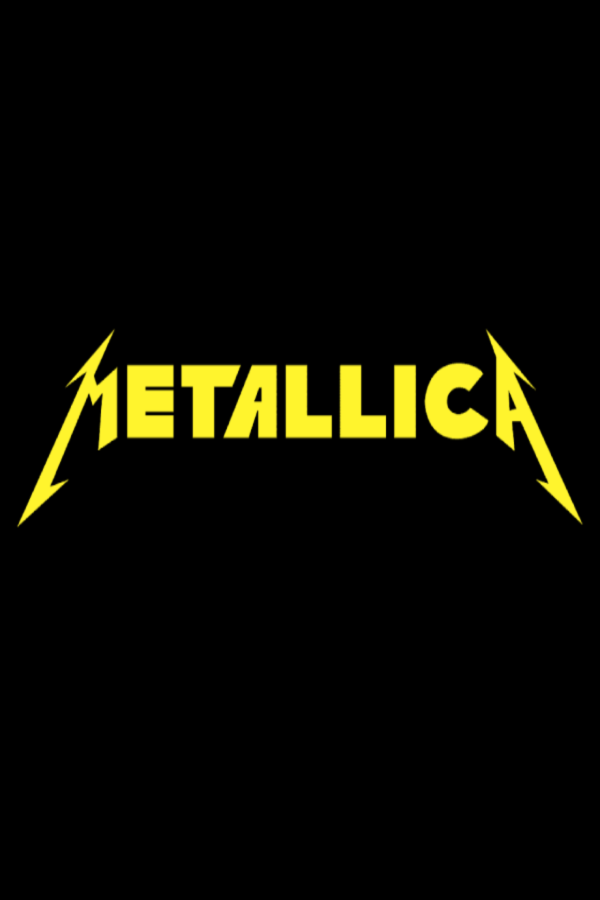
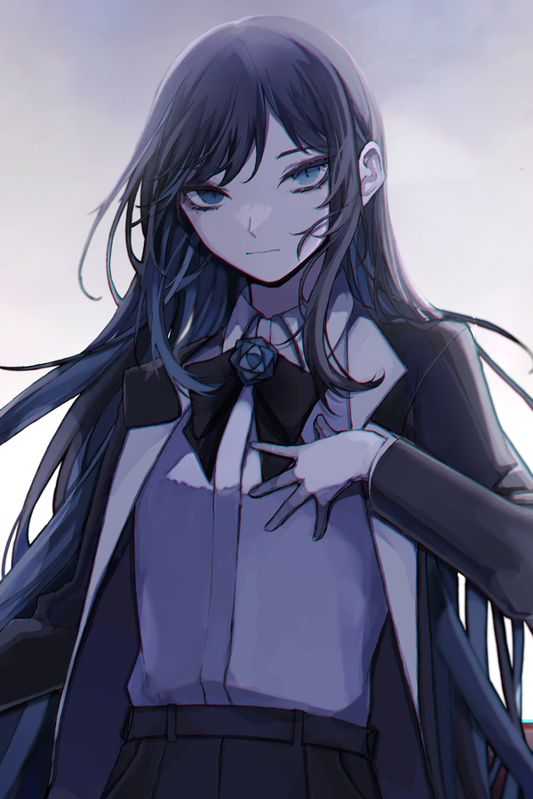
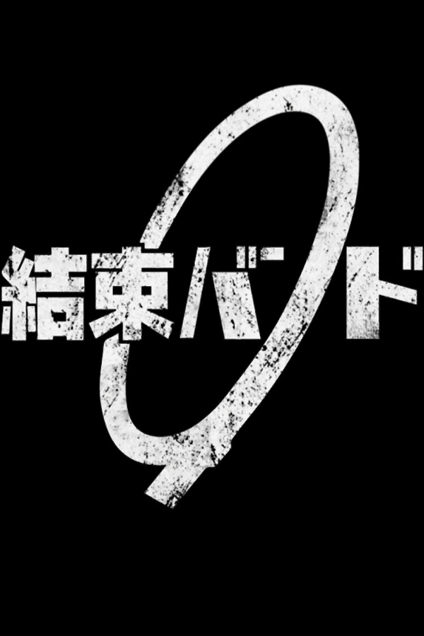

Ado niesamowicie mnie inspiruje swoim głosem i energią. Jej utwory mają w sobie coś unikalnego, potrafią być zarówno mocne i intensywne, jak i delikatne czy melancholijne.
To, co najbardziej mi się podoba, to jej zdolność do przekazywania emocji w taki sposób, że mam wrażenie, jakby śpiewała prosto do mnie. Jej muzyka często daje mi siłę, poprawia nastrój i pozwala oderwać się od codzienności.
Ado

Kessoku Band
Kessoku Band poznałem dzięki anime Bocchi the Rock! i od razu wpadli mi w ucho. Ich brzmienie łączy energię rocka z przyjemną melodyjnością, co sprawia, że ich muzyki słucha się bardzo lekko i z radością.
Podoba mi się to, że w ich piosenkach jest sporo autentyczności – czuję w nich szczerość i młodzieńczy entuzjazm. Kiedy słucham Kessoku Band, mam wrażenie, że sam jestem częścią jakiegoś fajnego zespołu, i to daje mi pozytywną motywację.

Metallica
Metallica to klasyka, której nie da się porównać z nikim innym. Ich muzyka jest dla mnie potężnym źródłem energii – te ciężkie riffy i mocny wokal zawsze sprawiają, że mam więcej siły i determinacji.
Lubię w nich to, że potrafią być agresywni i pełni mocy, a jednocześnie mają w sobie pewną głębię, która daje do myślenia. Metallica wpływa na mnie w taki sposób, że zawsze przypomina mi, żeby nie poddawać się i walczyć dalej, niezależnie od trudności.
